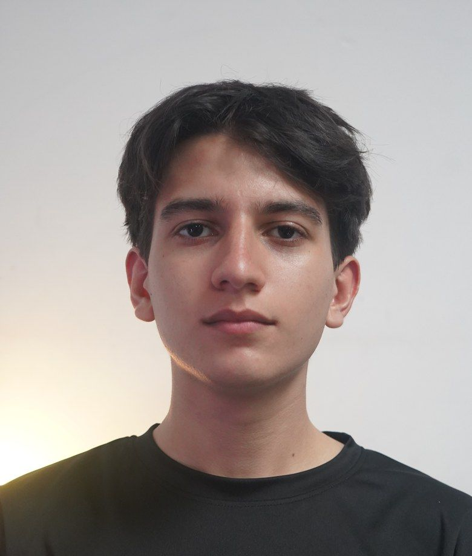
Carlos Jaramillo
Electronics & Software Lead
A robot that explores dangerous archaeological sites so people don't have to. Built by three students from Panama.
Help us get to Puerto Rico →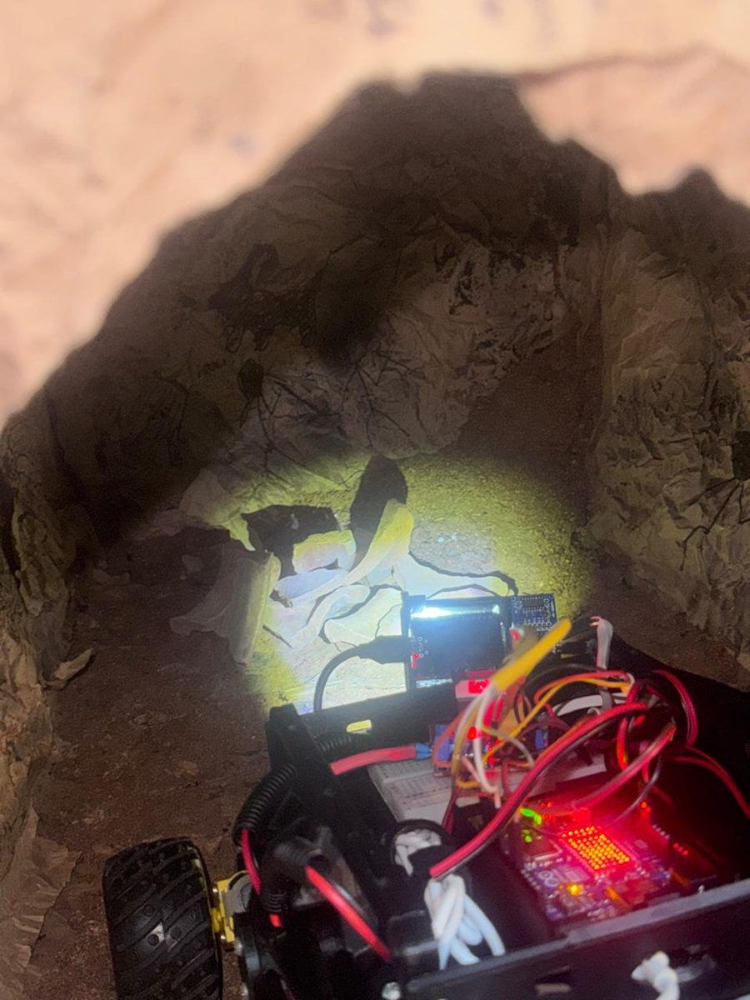
WRO 2026 International Final · Puerto Rico · 7 Dec
What it does
Old forts, caves and tombs can collapse, and the air inside can be toxic. Archaeologists walk in anyway. Blackout scouts ahead and tells them what's inside.
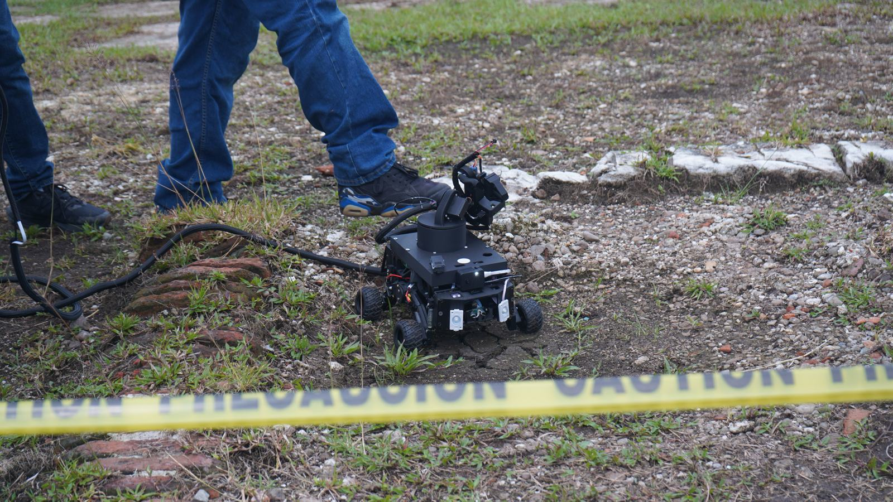
Rocker wheels climb rubble. Lights and camera see in the dark.
Checks gas, heat, humidity and walls, then says: clear, caution or danger.
Its AI, Sage, spots rock art or pottery and saves a photo with location.
Built by hand
Every part 3D-printed, wired and tested by us. Each version fixed what broke in the last one.
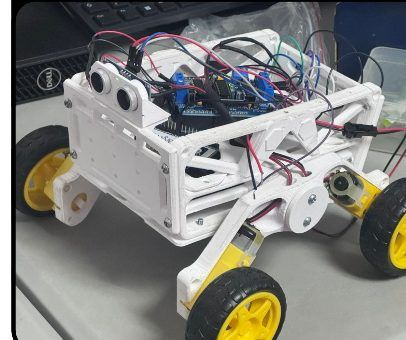
White plastic frame. Proved the idea works.
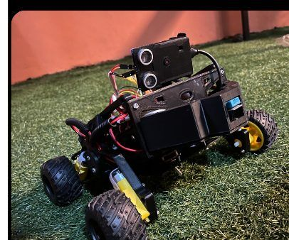
Camera, off-road tyres. Sage, our AI, is born.
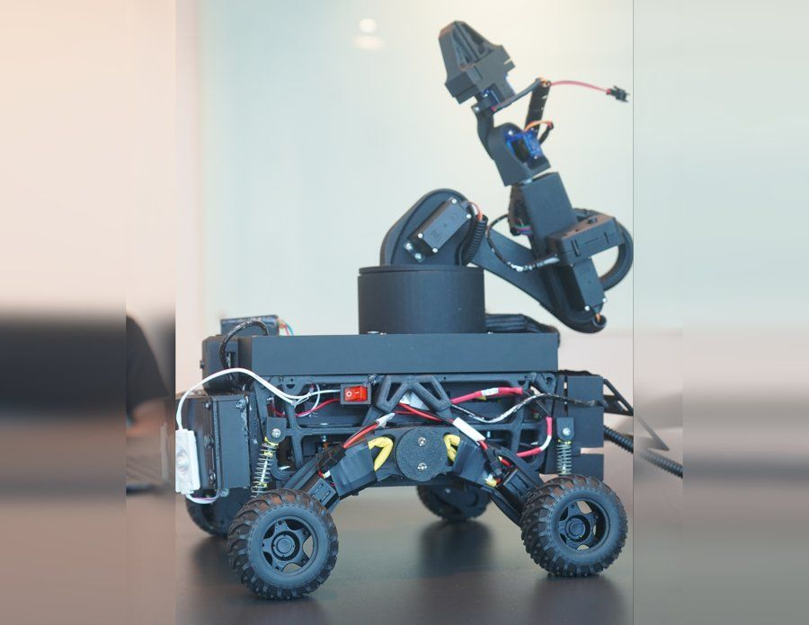
Springs, first arm. Won the National Final.
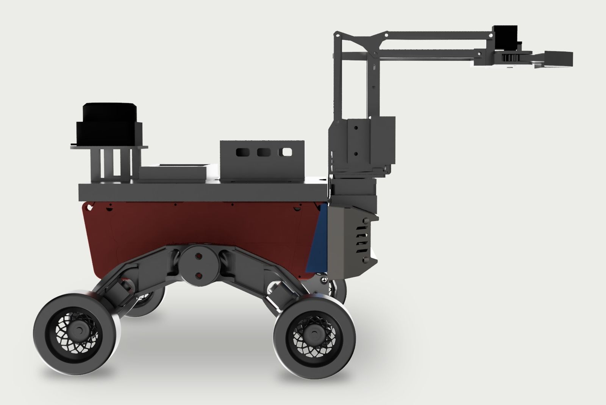
Gripper, 360° scanner, GPS, gas sensor, our own circuit board.
The team
Kings Robotics, Instituto Bilingüe Cristo de los Milagros, Panama City.

Electronics & Software Lead
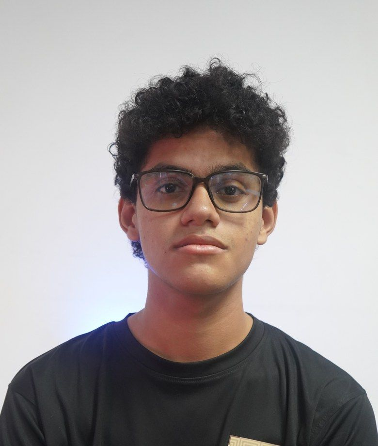
Assembly & Construction Lead
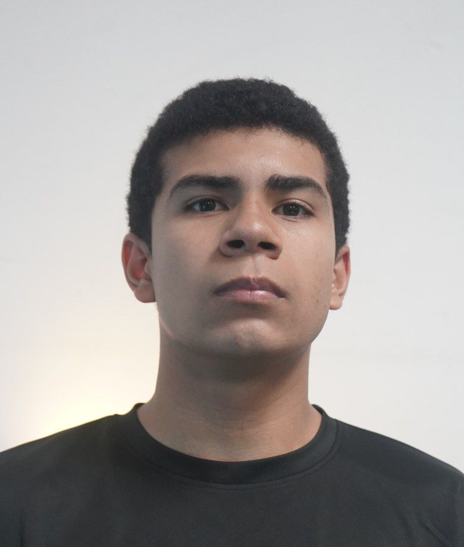
Research & Development Lead
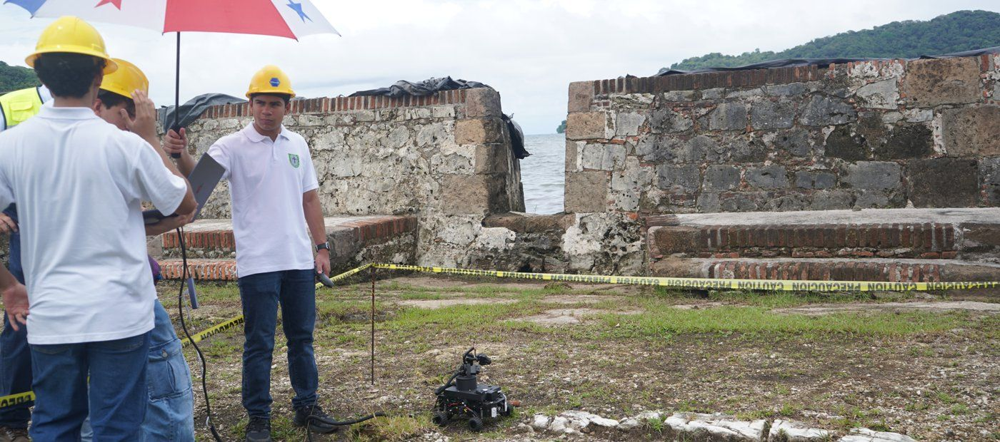
Portobelo, Panama
In October 2026 we took Blackout to Portobelo, a UNESCO site in danger, with archaeologist Prof. Juan Ortega. It drove the fort, photographed the walls and identified bricks, coral stone and a glazed pottery shard on the spot.
UN Sustainable Development Goals
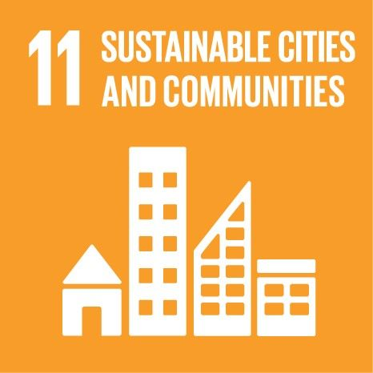
Blackout records sites like Portobelo without touching them, before they're lost.
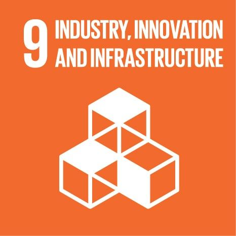
Robotics and AI for archaeologists on tight budgets, at a fraction of what existing robots cost.
WRO International Final · Puerto Rico · 7–10 December 2026
We won the national final. Now we need help with travel and parts to compete in Puerto Rico.
--
days to go
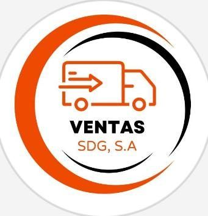